철도토목산업기사 (2004-05-23 기출문제)
1과목: 철도공학
1. 다음 용접방법 중 공장에서 가장 대규모로 작업하기에 적절한 방법은 ?
- 엔크로즈드아크용접
- 가스압접용점
- 플레시벗트용접
- 테르밋트용접
(정답률: 알수없음)

2. 냉한지에서 노반내의 물이 얼어 팽창하여 궤도를 들어올려 궤도면의 고저틀림을 발생시키는 현상은 ?
- 워터 포켓
- 분니
- 동상
- 도상침하
(정답률: 알수없음)
3. 궤도에 작용하는 각종 힘 중 온도변화와 제동 및 시동 하중 등에 의하여 생기며 특히 구배구간에서 차량 중량의 점착력에 의해 생기는 것은 ?
- 횡압
- 축방향력
- 수직력
- 불평형 원심력
(정답률: 알수없음)
4. 궤도재료점검 중 레일점검 사항이 아닌 것은 ?
- 외관점검
- 특별점검
- 해체점검
- 초음파 탐상 점검
(정답률: 알수없음)
5. 다음중 콘크리트 침목의 장점으로 적당치 않은 것은 ?
- 부식의 염려가 없고 내구년한이 길다.
- 탄성이 풍부하며 완충성이 크다.
- 보수비가 적게 소요되어 경제적이다.
- 자중이 커서 안정이 좋기 때문에 궤도 틀림이 적다.
(정답률: 알수없음)
6. 레일이음의 침목배치 방법 중 레일단부가 내민보 역할을 하여 이음매 충격을 완화할 수 있는 것은 ?
- 지접법
- 현접법
- 2정이음매법
- 3정이음매법
(정답률: 알수없음)
7. 크로싱 번호를 구하는 식은 ? (단, θ 는 크로싱각이다.)
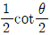
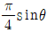
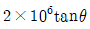
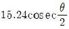
(정답률: 알수없음)
8. 철도교량 설계시 교량의 공간이 부족한 곳에 사용되는 상부구조 형식은 ?
- I빔거더
- 드와프거더
- 플레이트거더
- PC빔
(정답률: 알수없음)
9. 열차자동 제어장치중 열차속도를 제한하는 구역에 있어서 제한속도 이상으로 운행하게 되면 자동적으로 제동이 작용하여 감속을 하도록 열차속도를 제어하는 장치는 ?
- 자동열차 운행장치
- 자동열차 정지장치
- 열차집중 운행장치
- 자동열차 제어장치
(정답률: 알수없음)
10. 다음의 정거장 구내 선로 중에서 측선으로 보기가 어려운 것은 ?
- 대피선
- 유치선
- 입환선
- 인상선
(정답률: 알수없음)
11. 궤도재료 점검의 종류 중 도상점검시 시행하여야 할 사항으로 가장 거리가 먼 것은 ?
- 단면부족
- 자갈의 입도
- 도상보충 또는 정리양부
- 도상횡저항력 유지상태 양부
(정답률: 알수없음)
12. 목침목의 방부처리 방법이 아닌 것은 ?
- 베셀법
- 로오리법
- 뉴톤법
- 류우핑법
(정답률: 알수없음)
13. 다음중 레일의 구성 원소로 맞지 않는 것은 ?
- 탄소
- 규소
- 인
- 알류미늄
(정답률: 알수없음)
14. 차량의 운전에 지장이 없도록 궤도상에 일정공간을 설정하는 한계로서 건물과 모든 건조물을 침범할수 없도록 정한 한계는 ?
- 차량한계
- 선로한계
- 열차한계
- 건축한계
(정답률: 알수없음)
15. 터널내 장대레일을 부설할때 고려할 사항중 옳지 않은 것은 ?
- 연약노반을 피할 것
- 누수등으로 국부적인 레일부식이 심한 개소는 피할 것
- 터널의 입구에서 외부온도와의 영향이 큰 곳은 피할 것
- 온도변화의 범위가 설정온도의 ± 40℃이내인 터널을 선택할 것
(정답률: 알수없음)
16. 전기차량 중 동력집중방식과 동력분산방식의 득실을 비교한 내용 중 동력집중방식의 장점에 해당하는 것은 ?
- 가속성이 좋다.
- 객차의 소음· 진동이 적다.
- 동력차의 일부가 고장나도 운전 가능하다.
- 기기가 분산되어 있으므로 부담하중이 평균화되어 경량이다.
(정답률: 알수없음)
17. 국철에서 곡선반경 R=600m, 통과속도 80km/h일때 균형 캔트량은 ?
- 116mm
- 136mm
- 126mm
- 106mm
(정답률: 알수없음)
18. 열차가 주행할때 그 운행방향과 반대로 작용하는 모든 저항을 총칭하여 말하며 전동기의 입력대 출력간의 손실, 치차의 전달손실 등이 포함되지 않는 저항은 ?
- 열차저항
- 출발저항
- 주행저항
- 가속도저항
(정답률: 알수없음)
19. 다음 철도계획 중 영업계획은 어느 것인가 ?
- 설비의 근대화
- 수송서비스 향상
- 여객유치를 촉진
- 수송력증강
(정답률: 알수없음)
20. 수송능력의 산정시 수송력 증강대책의 선택이나 착공시기에 대한 자료가 되는 것으로 최저의 수송원가가 되는 선로의 열차횟수를 나타내는 선로 용량은 ?
- 경제용량
- 지표용량
- 실용용량
- 한계용량
(정답률: 알수없음)
2과목: 측량학
21. 지상고도 3,000m의 비행기 위에서 초점거리 150.0mm인 사진기로 촬영한 항공사진에서 길이가 30m인 교량의 사진에서의 길이는 ?
- 1.3mm
- 2.3mm
- 1.5mm
- 2.5mm
(정답률: 알수없음)
22. 축척 1:1000에서의 면적을 측정하였더니 도상면적이 3cm2이었다. 그런데 도면 전체가 1% 수축되었었다면 실제면적은 ?
- 30600m2
- 3060m2
- 306m2
- 30.6m2
(정답률: 알수없음)
23. 100m2의 정사각형 토지면적을 0.1m2까지 정확하게 구하기 위하여 필요하고도 충분한 한 변의 측정거리는 다음 중 몇 mm까지 측정하여야 하겠는가 ?
- 3mm
- 4mm
- 5mm
- 6mm
(정답률: 알수없음)
24. 노선측량에서 노선선정을 할 때 가장 중요한 것은 ?
- 곡선의 대소(大小)
- 공사기일
- 곡선설치의 난이도
- 수송량 및 경제성
(정답률: 알수없음)
25. 표와 같은 횡단수준측량에서 우측 12m 지점의 지반고는? (단, 측점 No. 10의 지반고는 100.00m 이다.)
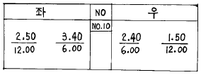
- 99.50m
- 99.60m
- 100.00m
- 101.50m
(정답률: 알수없음)
26. 트래버스 측선의 방위가 S 75° W, 측선거리 60m 일 때 위거 및 경거는 ?
- 위거 : - 15.53m , 경거 : - 57.96m
- 위거 : + 57.96m , 경거 : + 15.53m
- 위거 : - 57.96m , 경거 : - 15.53m
- 위거 : + 15.53m , 경거 : + 57.96m
(정답률: 알수없음)
27. 1/50,000 지형도 상에서 두점간의 거리가 62mm이고 표고차가 500m일 때 이 사면의 경사도는 약 얼마인가 ?
- 1/4
- 1/6
- 1/8
- 1/10
(정답률: 알수없음)
28. 삼각점에서 행해지는 모든 각 관측에서 만족해야할 조건이 아닌 것은 ?
- 한 측점의 둘레에 있는 모든 각을 합한 것은 360°가 되어야 한다.
- 삼각망 중 어느 한변의 길이는 계산순서에 관계없이 동일해야 한다.
- 삼각형 내각의 합은 180° 가 되어야 한다.
- 각 관측 방법은 방사법을 사용하여 최대한 정확히 한다.
(정답률: 알수없음)
29. 유속 측량 장소의 선정 시 고려하여야할 사항으로 옳지 않은 것은 ?
- 직류부의 흐름이 일정하고 하상경사가 일정하여야 한다.
- 수위 변화에 횡단 형상이 급변하지 않아야 한다.
- 가급적 지형지물이 없는 곳을 택한다.
- 관측장소의 상,하류의 유로가 일정한 단면을 갖고 있으며 관측이 편리하여야 한다.
(정답률: 알수없음)
30. 노선측량에서 제1중앙종거(M)은 제3중앙종거(m2)의 약 몇 배인가 ?
- 2배
- 4배
- 8배
- 16배
(정답률: 알수없음)
31. 지오이드를 바르게 설명한 것은 ?
- 육지 및 해저의 凹凸을 평균값으로 정한 면이다.
- 평균해수면을 육지내부까지 연장했을 때의 가상적인 곡면이다.
- 육지와 해양의 지평면을 말한다.
- 회전타원체와 같은 것으로 지구형상이 되는 곡면이다
(정답률: 알수없음)
32. 종중복도가 60%인 단 촬영경로로 촬영한 사진의 지상 유효면적은? (단, 촬영고도 3000m, 초점거리 150mm, 사진크기 210mm× 210mm)
- 15.089km2
- 10.584km2
- 7.⑤6km2
- 5.889km2
(정답률: 알수없음)
33. A, B 두 점의 표고가 각각 102.3m, 504.7m 일 때 축척 1/25,000 지형도 상에 주곡선 간격으로 몇 개의 등고선을 삽입할 수 있는가 ?
- 8개
- 20개
- 40개
- 48개
(정답률: 알수없음)
34. 트래버스 측량에서 각 관측 결과가 허용오차 이내일 경우 오차처리 방법으로 옳지 않은 것은 ?
- 각 관측 정확도가 같을 때는 각의 크기에 관계없이 등배분한다.
- 각 관측 경중률이 다를 경우에는 경중률에 반비례하여 배분한다.
- 변 길이의 역수에 비례하여 배분한다.
- 각의 크기에 비례하여 배분한다.
(정답률: 알수없음)
35. 장애물로 인하여 PQ측정이 불가능하여 간접측량한 결과 AB = 225.85m가 측정되었다. 이 때 PQ의 거리는 ? (단, ∠PAB = 79° 36′ ∠QAB = 35° 31′ ∠PBA = 34° 17′ ∠QBA = 82° ⑤′ )
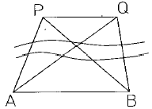
- 179.46m
- 177.98m
- 178.65m
- 180.75m
(정답률: 알수없음)
36. 교점(I.P.)는 기점에서 187.94m의 위치에 있고 곡선반경(R)은 250m, 교각(I) 43°57′20″, 현의 길이가 20m인 단곡선의 접선길이는 ?
- 87.046 m
- 100.894 m
- 288.834 m
- 50.447 m
(정답률: 알수없음)
37. 평판측량에서 전진법에 의하여 측점 16개의 폐합트래버스를 측정할 때 허용 폐합오차는 ?
- ± 1.2mm
- ± 1.5mm
- ± 1.8mm
- ± 2.1mm
(정답률: 알수없음)
38. 캔트(cant)의 계산에 있어서 곡률반경을 2배로 하면 캔트는 몇 배가 되는가 ?
- 1/4배
- 1/2배
- 2배
- 4배
(정답률: 알수없음)
39. 삼각망 중 정확도가 가장 높은 삼각망은 ?
- 단열삼각망
- 단삼각망
- 유심삼각망
- 사변형삼각망
(정답률: 알수없음)
40. 다음은 타원체에 관한 설명이다. 옳은 것은 ?
- 어느 지역의 측량좌표계의 기준이 되는 지구타원체를 준거타원체(또는 기준타원체)라 한다.
- 실제 지구와 가장 가까운 회전타원체를 지구타원체라 하며, 실제 지구의 모양과 같이 굴곡이 있는 곡면이다.
- 타원의 주축을 중심으로 회전하여 생긴 지구물리학적 형상을 회전타원체라 한다.
- 준거타원체는 지오이드와 일치한다.
(정답률: 알수없음)
3과목: 응용역학
41. 그림과 같은 3힌지 라아멘에 등분포 하중이 작용할 경우 A점의 수평반력은 ?
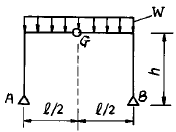
- 0
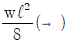
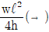
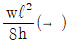
(정답률: 알수없음)
42. 리벳이 파괴될 때는 주로 어떤 응력이 발생하여 파괴되는가 ?
- 휨응력
- 인장응력
- 전단응력
- 압축응력
(정답률: 알수없음)
43. 지름이 D인 원형 단면의 기둥에서 핵(Core)의 직경은 ?
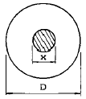
- D/2
- D/3
- D/4
- D/6
(정답률: 알수없음)
44. 길이가 6m인 단순보의 중앙에 3t의 집중하중이 연직으로 작용하고 있다. 이 때 단순보의 최대 처짐은 몇 cm 인가? (단, 보의 E=2000000kg/cm2, I=15000cm4 이다.)
- 1.5
- 0.45
- 0.27
- 0.09
(정답률: 알수없음)
45. 직경 D인 원형 단면보에 휨모멘트 M이 작용할 때 최대 휨응력은 ?
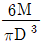
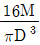
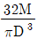
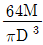
(정답률: 알수없음)
46. 다음과 같은 단면적이 A인 임의의 부재단면이 있다. 도심축으로부터 y1 떨어진 축을 기준으로한 단면2차모멘트의 크기가 Ix1일때, 도심축으로부터 3y1 떨어진 축을 기준으로한 단면2차모멘트의 크기는 ?
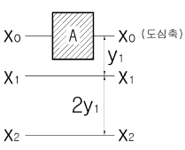
- Ix1+2Ay1
- Ix1+3Ay1
- Ix1+4Ay1
- Ix1+8Ay1
(정답률: 알수없음)
47. 그림과 같은 캔틸레버보의 자유단에 단위처짐이 발생하도록 하는데 필요한 등분포하중 w의 크기는 ? (단, EI는 일정하다.)
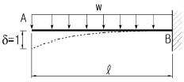
- 6EＩ/ ℓ3
- 8EＩ/ ℓ4
- 3EＩ/ ℓ3
- 12EＩ/ ℓ4
(정답률: 알수없음)
48. 그림과 같은 부정정보에서 지점 B의 휨모멘트 MB는?
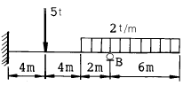
- -31.2 t·m
- -36 t·m
- -41 t·m
- -47 t·m
(정답률: 알수없음)
49. 탄성변형에너지는 외력을 받는 구조물에서 변형에 의해 구조물에 축적되는 에너지를 말한다. 탄성체이며 선형거동을 하는 길이가 L인 캔틸레버보에 집중하중 P가 작용할 때 굽힘모멘트에 의한 탄성변형에너지는? (단, EI는 일정)
- P2L2 / 2EＩ
- P2L2 / 6EＩ
- P2L3 / 2EＩ
- P2L3 / 6EＩ
(정답률: 알수없음)
50. 그림과 같은 구조물에서 AC 강봉의 최소직경 D는? (단, 강봉의 허용응력은 σa=1,400kg/cm2으로 한다.)
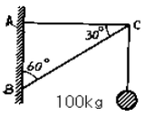
- 4mm
- 6mm
- 8mm
- 10mm
(정답률: 알수없음)
51. 길이가 1.0m이고 한 변의 길이가 10cm인 정사각형 단면의 부재가 양끝이 고정되어 있다. 온도가 10℃ 내려갔을 때 이로 인한 부재 단면에 발생하는 단면력은?(탄성계수 E=2.1×106 kg/cm2, 선팽창계수=10-5/℃)
- 210 kg
- 420 kg
- 21000 kg
- 42000 kg
(정답률: 알수없음)
52. 다음 그림과 같이 연직의 분포하중 w = 2x2 이 작용한다. 지점 B 의 연직방향 반력의 크기는 ?
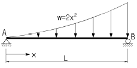
- L2/2
- 2L2/3
- L3/2
- 2L3/3
(정답률: 알수없음)
53. 다음 도형(빗금친 부분)의 X축에 대한 단면 1차 모멘트는?
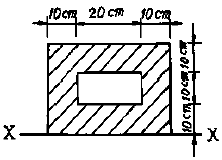
- 5,000cm3
- 10,000cm3
- 15,000cm3
- 20,000cm3
(정답률: 알수없음)
54. 탄성계수 E는 2,000,000kg/cm2이고 포아슨 비 ν=0.3일 때 전단탄성계수 G는 약 얼마인가 ?
- 770,000kg/cm2
- 750,000kg/cm2
- 730,000kg/cm2
- 710,000kg/cm2
(정답률: 알수없음)
55. 그림과 같은 하우 트러스의 bc 부재의 부재력 S는?
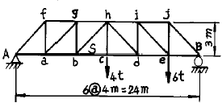
- 2 t
- 4 t
- 8 t
- 12 t
(정답률: 알수없음)
56. 다음 구조물에서 절점D는 이동하지 않으며 재단 A, B, C가 고정일 때 MCD는?
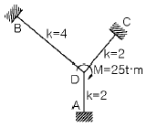
- 3.125t· m
- 4.667t· m
- 6.333t· m
- 6.250t· m
(정답률: 알수없음)
57. 그림과 같은 빗금 부분의 단면적 A인 단면에서 도심 y를 구한 값은 ?
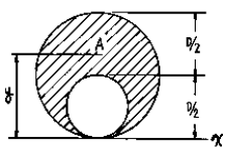
- 5D/12
- 6D/12
- 7D/12
- 8D/12
(정답률: 알수없음)
58. 그림과 같은 보의 고정단 A의 휨 모멘트는 ?
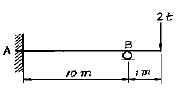
- 1 t· m
- 2 t· m
- 3 t· m
- 4 t· m
(정답률: 알수없음)
59. 다음 그림에서 하중 P 에 의한 A 점의 휨모멘트는 ?
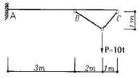
- 10 t· m
- 20 t· m
- 30 t· m
- 50 t· m
(정답률: 알수없음)
60. 다음 장주의 단면, 길이, 하중이 같을 때 가장 강한 기둥은?
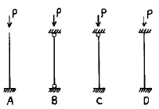
- A
- B
- C
- D
(정답률: 알수없음)
4과목: 건설재료 및 시공
61. 폭약을 다룰 때 주의할 사항 중 틀린 것은 ?
- 운반중에 충격을 주어서는 안된다.
- 뇌관과 폭약은 같은 장소에 보관한다.
- 장기간 보존시 흡수 동결이 되지 않도록 한다.
- 다이너마이트는 햇빛을 직접 쬐지 않도록 한다.
(정답률: 알수없음)
62. 일정한 길이로 분리된 프리캐스트 세그멘트를 공장에서 제작, 운반하여 가설 위치에 거치후 상부구조를 완성하는 교량가설 공법은 ?
- M.S.S공법
- P.S.M공법
- F.C.M공법
- I.L.M공법
(정답률: 알수없음)
63. 화산회 또는 화산사가 퇴적고결된 암석으로 내화성이 크고 풍화되어 실트질의 흙이 되는 암석은 ?
- 혈암(shale)
- 응회암(Tuff )
- 점판암(Clay slate)
- 안산암(Andesite)
(정답률: 알수없음)
64. 다음 지반 중 Boiling현상이 일어나기 쉬운 토질은 ?
- 점토질 지반
- 실트(Silt)질 지반
- 암반
- 사질 지반
(정답률: 알수없음)
65. 강의 열처리 방법 중에서 강의 조직을 미립화(微粒化)하고 강속의 변형을 제거, 성분을 평형 상태로 하기 위하여 변태점 이상의 온도로 가열해서 적당한 시간을 두고 서서히 냉각하는 방법은 ?
- 풀림(Annealing)
- 담금질(Quenching)
- 뜨임(Tempering)
- 불림(Normalizing)
(정답률: 알수없음)
66. 서중 콘크리트에 관한 다음 설명 중 부적당한 것은?
- 비빈콘크리트는 1.5시간 이내에 빨리 타설해야 한다.
- 콘크리트의 온도는 타설시 35℃ 이하이어야 한다.
- 빨리 끝손질하기 위하여 조강포틀랜드시멘트를 사용해야 한다.
- 콘크리트 치기는 콜드죠인트가 생기지 않도록 실시해야 한다.
(정답률: 알수없음)
67. 다음 중 폭발력이 가장 강하고 수중폭발에도 사용할 수 있는 것은 ?
- 규조토 다이나마이트
- 분상 다이나마이트
- 교질 다이나마이트
- 스트레이트 다이나마이트
(정답률: 알수없음)
68. 미리 거푸집 안에 굵은 골재를 채우고 그틈에 모르타르를 압력을 가하여 주입한 콘크리트는?
- 진공 콘크리트
- 프리팩트(prepacked) 콘크리트
- 프리스트레스트(prestressed) 콘크리트
- 레디믹스트 콘크리트
(정답률: 알수없음)
69. 옹벽의 안정성 검토시 고려사항이 아닌 것은 ?
- 활동(Sliding)에 대한 안정
- 전도(Over turning)에 대한 안정
- 지반의 지지력(Bearing capacity)에 대한 안정
- 유효응력(Effective stress)에 대한 안정
(정답률: 알수없음)
70. 새로운 깊은 기초를 시공할 때 인접된 기존건물의 기초가 얕아서 이것을 보강하는 공법으로 적당한 것은 ?
- 뉴매틱케이슨 공법
- 오픈케이슨 공법(open cassion)
- 리버스서큘레이션 공법
- 언더피닝 공법(underpinning)
(정답률: 알수없음)
71. 평균굴착 압토거리가 50m 되는 현장에서 불도저 운전시간 당 작업량을 본바닥 토량으로 계산하면 약 얼마인가? (단, 1회 굴착압토량 3.4 m3, 작업효율 0.4, 토량변화율(L) 1.2 , 전진속도 40m/분, 후진속도 43m/분, 기어변속 및 가속시간 0.33 분)
- 25 m3/hr
- 20 m3/hr
- 35 m3/hr
- 30 m3/hr
(정답률: 알수없음)
72. 포틀랜드 시멘트의 성질에 대한 설명 중 틀린 것은?
- 시멘트의 분말도가 높으면 수축이 크고 균열발생의 가능성이 크며, 시멘트 자체가 풍화되기 쉽다.
- 시멘트가 불안정하면 이상팽창 및 수축을 일으켜 콘크리트에 균열을 발생시킨다.
- 시멘트의 입자가 작고 온도가 높을수록 수화속도가 빠르게 되어 초기강도가 증가된다.
- 시멘트의 응결시간은 수량이 많고 온도가 낮으면 빨라지고 분말도가 높거나 C3A의 양이 많으면 느리게 된다.
(정답률: 알수없음)
73. 흙공사의 굴착작업에 사용하는 기종으로 가장 적당치 않는 것은 ?
- 스태빌라이저(stabilizer)
- 크램셀(clam shell)
- 백호우(back hoe)
- 불도우저(bulldozer)
(정답률: 알수없음)
74. 다음 비탈면 보호공법중 식생에 의한 보호공이 아닌 것은 ?
- 메쌓기공
- 평떼공
- 줄떼공
- 씨앗 뿌리기공
(정답률: 알수없음)
75. 체가름 시험결과 잔골재의 조립율이 2.61, 굵은 골재의 조립율이 7.20 이었다. 잔골재와 굵은골재의 혼합비율을 1:2로 하면 혼합골재의 조립률은 얼마인가 ?
- 3.67
- 4.67
- 5.67
- 6.67
(정답률: 알수없음)
76. 비중이 큰 골재를 사용했을 때의 일반적인 특성과 관계가 없는 것은 ?
- 내구성이 좋아진다.
- 흡수성이 증대된다.
- 동결에 의한 손실이 줄어든다.
- 강도가 증가한다.
(정답률: 알수없음)
77. 연약지반 개량공법 중 동결공법의 특징으로 옳지 않은 것은 ?
- 모든 토질에 적용할 수 있다.
- 차수성이 양호한 공법이다.
- 공사비가 저렴한 공법이다.
- 화학적 물질이 많을때에는 동결이 잘 되지 않는다.
(정답률: 알수없음)
78. 콘크리트용 혼화재인 고로슬래그 미분말에 대한 설명 중 틀린 것은 ?
- 고로슬래그 미분말을 사용한 콘크리트는 초기강도는 작으나 28일 이후의 장기강도 향상효과가 있다.
- 고로슬래그 미분말은 결합재의 일부로 혼합하는 양이 증가할수록 굳지 않은 콘크리트의 응결이 빨라진다.
- 경화한 콘크리트의 수밀성 향상효과가 있으며 철근부식억제 효과가 있다.
- 고로슬래그 미분말의 혼합량이 증가할수록 굳지 않은 콘크리트의 블리딩이 작고 유동성이 향상된다.
(정답률: 알수없음)
79. 시멘트의 응결 정도를 측정하는 시험방법은 ?
- 압축강도 시험
- 분말도 시험
- 안정성 시험
- 길모아침 시험
(정답률: 알수없음)
80. 알칼리골재 반응을 억제하는 방법 중 틀린 것은 ?
- 고로슬래그 미분말을 혼화재로 사용한다.
- 플라이애시를 혼화재로 사용한다.
- 저알칼리형 시멘트를 사용한다.
- 단위시멘트량을 많이 사용한다.
(정답률: 알수없음)
5과목: 철도보선관계법규
81. 철도본선에서 인접한 두곡선 간의 캔트체감 후 2급선에서 얼마의 직선을 삽입하여야 하는가 ?
- 10m
- 30m
- 70m
- 80m
(정답률: 알수없음)
82. 국유철도 직선구간에 있어서 선로중심으로부터 시공기면의 폭으로 틀린 것은 ?
- 1급선 4.5m이상
- 2급선 4.0m이상
- 3급선 3.5m이상
- 4급선 3.0m이상
(정답률: 알수없음)
83. 국유철도 건설규칙에서 완화곡선의 길이 중 옳지 않은 것은 ?
- 1급선 : 캔트의 1700배 길이
- 2급선 : 캔트의 1300배 길이
- 3급선 : 캔트의 800배 길이
- 4급선 : 캔트의 600배 길이
(정답률: 알수없음)
84. 일반적으로 선로 경계시 경계원은 몇 명을 1개조로 구성하는가 ?
- 1명
- 2명
- 3명
- 4명
(정답률: 알수없음)
85. 다음 중 철도의 슬랙에 관한 설명으로 틀린 것은 ?
- 슬랙의 최대치는 30mm 이다.
- 슬랙조정치가 최대일 때 슬랙값도 최대가 된다.
- 슬랙의 크기는 곡선반경에 반비례 한다.
- 완화곡선이 없는 경우 슬랙체감은 캔트의 체감길이와 같다.
(정답률: 알수없음)
86. 다음 철도사고 중 종사원의 취급과오 또는 시설·차량기구 등의 정비소홀 등으로 인하여 발생한 사고는 ?
- 책임사고
- 운전사고
- 일반안전사고
- 시정조치
(정답률: 알수없음)
87. 다음중 목침목 부설방법으로 옳지 않은 것은 ?
- 연호정이 박힌쪽을 위로하여 부설한다.
- 수심이 위로 가게하여 부설한다.
- 선로좌측을 기준으로 줄을 맞춘다.
- 궤도에 직각되도록 부설한다.
(정답률: 알수없음)
88. 정거장외의 본선에서 레일의 중량 및 도상의 두께는 다음 값 이상이어야 하는데 다음중 옳지 않은 것은 ?
- 1급선 : 60kg레일, 도상두께 300mm
- 2급선 : 60kg레일, 도상두께 300mm
- 3급선 : 50kg레일, 도상두께 250mm
- 4급선 : 50kg레일, 도상두께 250mm
(정답률: 알수없음)
89. 선로차단작업 시행책임자의 휴대품이 아닌 것은 ?
- 운전지조서
- 휴대무전기 또는 휴대전화기
- 수신호기
- 시계
(정답률: 알수없음)
90. 다음 중 궤도공사 유간정정 작업순서로 올바른 것은 ?
- 신유간계산→ 유간측정→ 정정작업→ 다짐작업
- 유간측정→ 신유간계산→ 정정작업→ 다짐작업
- 유간측정→ 신유간계산→ 다짐작업→ 정정작업
- 신유간계산→ 유간측정→ 다짐작업→ 정정작업
(정답률: 알수없음)
91. 도상다짐에서 궤간 내 다지기의 넓이는 레일 중심에서 좌우 각 얼마를 표준으로 하는가 ?
- 20 cm ∼ 30 cm
- 30 cm ∼ 40 cm
- 40 cm ∼ 50 cm
- 50 cm ∼ 60 cm
(정답률: 알수없음)
92. 선로구조물의 상태 평가를 위한 점검 결과 주요 부재에 진전된 노후화(강재의 피로 균열, 콘크리트의 전단 균열, 침하 등)로 긴급한 보수· 보강을 필요로 하고 사용제한여부 판단이 필요한 상태 등급은 ?
- A급
- B급
- C급
- D급
(정답률: 알수없음)
93. 열차의 안전을 위하여 기관사에게 알리는 신호뇌관을 장치할 때에 주의하여야 할 사항으로 옳은 것은 ?
- 전철기·크로싱·기타 특수시설처 및 건널목에 설치할 것
- 가능한 교량위에 설치하여 식별이 용이하도록 할 것
- 안전을 위해 가급적 침수지점에 설치할 것
- 눈이 있을 때는 제설하고 장치할 것
(정답률: 알수없음)
94. 레일 용접부에 대한 다음 항목의 검사종목중 전수 검사를 하지 않아도 되는 것은 ?
- 외관검사
- 자분탐상검사
- 초음파탐상검사
- 경도시험
(정답률: 알수없음)
95. 인력 궤도틀림점검에 대한 설명 중 틀린 것은 ?
- 수평의 경우 직선부는 좌측레일기준
- 면마춤의 경우 곡선부는 내측레일을 측정
- 줄마춤의 경우 곡선부는 내측레일을 측정
- 궤간의 경우 축소 틀림량은 (-)로 표시
(정답률: 알수없음)
96. 4급선에 패킹을 삽입할 때 전후 접속구배는 얼마의 길이에서 체감하여야 하는가 ?
- 패킹두께의 600배이상
- 패킹두께의 400배이상
- 패킹두께의 200배이상
- 체감길이를 두지 않아도 된다.
(정답률: 알수없음)
97. 다음 철도건널목 중 교통안전표지만 설치하는 건널목은 ?
- 1종건널목
- 2종건널목
- 3종건널목
- 4종건널목
(정답률: 알수없음)
98. 국철에서 선로작업개소에는 선로작업표를 열차진행 방향에 대향으로 일정 기준이상의 거리에 세워야 한다. 이 때 열차속도가 120km/h 인 선구에서의 거리는 ?
- 200m 이상
- 300m 이상
- 400m 이상
- 500m 이상
(정답률: 알수없음)
99. 탈선포인트는 인접 본선로와의 간격이 최소 몇 m 이상되는 지점에 설치하여야 하는가 ?
- 4.0 m
- 4.25 m
- 4.30 m
- 4.50 m
(정답률: 알수없음)
100. 본선에서 선로 등급과 침목 종별에 따른 침목 배치 정수(10미터 당)가 잘못 짝지어진 경우는?
- 1급선-목침목-17
- 1급선-교량침목-25
- 2급선-교량침목-25
- 3급선-목침목-17
(정답률: 알수없음)